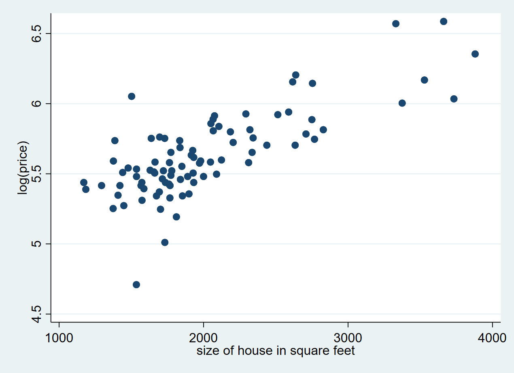

We import the data:
. clear all
. bcuse vote1
Contains data from http://fmwww.bc.edu/ec-p/data/wooldridge/vote1.dta
Observations: 173
Variables: 10 26 Jan 2000 12:16
--------------------------------------------------------------------------------------------------------------------------------------------------------------------------------------------------------
Variable Storage Display Value
name type format label Variable label
--------------------------------------------------------------------------------------------------------------------------------------------------------------------------------------------------------
state float %9.0g
district float %9.0g
democA float %9.0g
voteA float %9.0g
expendA float %9.0g
expendB float %9.0g
prtystrA float %9.0g
lexpendA float %9.0g
lexpendB float %9.0g
shareA float %9.0g
--------------------------------------------------------------------------------------------------------------------------------------------------------------------------------------------------------
Sorted by:
Perform the regression:
. reg voteA lexpendA lexpendB prtystrA
Source | SS df MS Number of obs = 173
-------------+---------------------------------- F(3, 169) = 215.23
Model | 38405.1089 3 12801.703 Prob > F = 0.0000
Residual | 10052.1396 169 59.4801161 R-squared = 0.7926
-------------+---------------------------------- Adj R-squared = 0.7889
Total | 48457.2486 172 281.728189 Root MSE = 7.7123
------------------------------------------------------------------------------
voteA | Coefficient Std. err. t P>|t| [95% conf. interval]
-------------+----------------------------------------------------------------
lexpendA | 6.083316 .38215 15.92 0.000 5.328914 6.837719
lexpendB | -6.615417 .3788203 -17.46 0.000 -7.363247 -5.867588
prtystrA | .1519574 .0620181 2.45 0.015 .0295274 .2743873
_cons | 45.07893 3.926305 11.48 0.000 37.32801 52.82985
------------------------------------------------------------------------------
Can perform the test as a wald test:
. test _b[lexpendA] + _b[lexpendB] = 0
( 1) lexpendA + lexpendB = 0
F( 1, 169) = 1.00
Prob > F = 0.3196
Or reexpress model:
. gen aux = lexpendA - lexpendB
. reg voteA aux lexpendB prtystrA
Source | SS df MS Number of obs = 173
-------------+---------------------------------- F(3, 169) = 215.23
Model | 38405.1089 3 12801.703 Prob > F = 0.0000
Residual | 10052.1397 169 59.4801165 R-squared = 0.7926
-------------+---------------------------------- Adj R-squared = 0.7889
Total | 48457.2486 172 281.728189 Root MSE = 7.7123
------------------------------------------------------------------------------
voteA | Coefficient Std. err. t P>|t| [95% conf. interval]
-------------+----------------------------------------------------------------
aux | 6.083316 .38215 15.92 0.000 5.328914 6.837719
lexpendB | -.532101 .5330858 -1.00 0.320 -1.584466 .520264
prtystrA | .1519574 .0620181 2.45 0.015 .0295274 .2743873
_cons | 45.07893 3.926305 11.48 0.000 37.32801 52.82985
------------------------------------------------------------------------------
We regress on surface and bedrooms
. clear all
. bcuse hprice1
Contains data from http://fmwww.bc.edu/ec-p/data/wooldridge/hprice1.dta
Observations: 88
Variables: 10 17 Mar 2002 12:21
--------------------------------------------------------------------------------------------------------------------------------------------------------------------------------------------------------
Variable Storage Display Value
name type format label Variable label
--------------------------------------------------------------------------------------------------------------------------------------------------------------------------------------------------------
price float %9.0g house price, $1000s
assess float %9.0g assessed value, $1000s
bdrms byte %9.0g number of bdrms
lotsize float %9.0g size of lot in square feet
sqrft int %9.0g size of house in square feet
colonial byte %9.0g =1 if home is colonial style
lprice float %9.0g log(price)
lassess float %9.0g log(assess
llotsize float %9.0g log(lotsize)
lsqrft float %9.0g log(sqrft)
--------------------------------------------------------------------------------------------------------------------------------------------------------------------------------------------------------
Sorted by:
. reg lprice sqrft bdrms
Source | SS df MS Number of obs = 88
-------------+---------------------------------- F(2, 85) = 60.73
Model | 4.71671468 2 2.35835734 Prob > F = 0.0000
Residual | 3.30088884 85 .038833986 R-squared = 0.5883
-------------+---------------------------------- Adj R-squared = 0.5786
Total | 8.01760352 87 .092156362 Root MSE = .19706
------------------------------------------------------------------------------
lprice | Coefficient Std. err. t P>|t| [95% conf. interval]
-------------+----------------------------------------------------------------
sqrft | .0003794 .0000432 8.78 0.000 .0002935 .0004654
bdrms | .0288844 .0296433 0.97 0.333 -.0300543 .0878232
_cons | 4.766027 .0970445 49.11 0.000 4.573077 4.958978
------------------------------------------------------------------------------
Again, we can do a Wald test:
. test _b[sqrft] * 150 + _b[bdrms] = 0
( 1) 150*sqrft + bdrms = 0
F( 1, 85) = 10.27
Prob > F = 0.0019
Or, what we are actually being requested, using an auxiliary variable.
. gen aux = sqrft - 150 * bdrms
. reg lprice aux bdrms
Source | SS df MS Number of obs = 88
-------------+---------------------------------- F(2, 85) = 60.73
Model | 4.71671468 2 2.35835734 Prob > F = 0.0000
Residual | 3.30088884 85 .038833986 R-squared = 0.5883
-------------+---------------------------------- Adj R-squared = 0.5786
Total | 8.01760352 87 .092156362 Root MSE = .19706
------------------------------------------------------------------------------
lprice | Coefficient Std. err. t P>|t| [95% conf. interval]
-------------+----------------------------------------------------------------
aux | .0003794 .0000432 8.78 0.000 .0002935 .0004654
bdrms | .0858013 .0267675 3.21 0.002 .0325804 .1390223
_cons | 4.766027 .0970445 49.11 0.000 4.573077 4.958978
------------------------------------------------------------------------------
Note that these documents are actually flexible. For example, you can also do plots or processings without showing the
